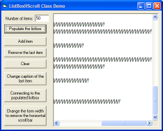

ListBoxHScroll (38K)
ListBoxHScroll (38K)
 5 Sep 2003
5 Sep 2003
Added a code example provided by 10Tec which automatically calculates the required width for items in the ListBox. This code can be used to either size the ListBox so the items fit without a scroll bar, or to set the ListBox item width precisely so the Horizontal scroll bar just covers the longest item. Very neat!

Change The Width of Items in a Listbox
Normally in a VB ListBox, if a ListItem is too long to fit, it is clipped by the display. This tip demonstrates how to modify a ListBox so it displays a longer items with a horizontal scroll bar.
Basic Sizing
The ListBox control API includes the LB_SETHORIZONTALEXTENT message which allows the actual width of the items to be set independently of the size of the control (which is the default behaviour). To see this working, start a new project in VB. Add a module, and then add the following code:
Declare Function GetWindowLong Lib "user32" Alias "GetWindowLongA" _
(ByVal hwnd As Long, ByVal nIndex As Long) As Long
Declare Function SetWindowLong Lib "user32" Alias "SetWindowLongA" _
(ByVal hwnd As Long, ByVal nIndex As Long, ByVal dwNewLong As Long) As Long
Declare Function SetWindowPos Lib "user32" _
(ByVal hwnd As Long, ByVal hWndInsertAfter As Long, _
ByVal x As Long, ByVal y As Long, ByVal cx As Long, _
ByVal cy As Long, ByVal wFlags As Long) As Long
Public Const GWL_STYLE = (-16)
Public Const SWP_NOACTIVATE = &H10
Public Const SWP_NOCOPYBITS = &H100
Public Const SWP_NOMOVE = &H2
Public Const SWP_NOOWNERZORDER = &H200 ' Don't do owner Z ordering
Public Const SWP_NOREDRAW = &H8
Public Const SWP_NOREPOSITION = SWP_NOOWNERZORDER
Public Const SWP_NOSIZE = &H1
Public Const SWP_NOZORDER = &H4
Public Const SWP_SHOWWINDOW = &H40
Public Const SWP_FRAMECHANGED = &H20 ' The frame changed: send WM_NCCALCSIZE
Public Const WS_HSCROLL = &H100000
Public Const LB_SETHORIZONTALEXTENT = &H194
Public Const LB_GETHORIZONTALEXTENT = &H193
Declare Function SendMessageLong Lib "user32" Alias "SendMessageA" _
(ByVal hwnd As Long, ByVal wMsg As Long, _
ByVal wParam As Long, ByVal lParam As Long) As Long
Now add a Listbox to your project's main form, and then add this code to the Form_Load procedure:
Dim i As Long
Dim lS As Long
Dim lW As Long
For i = 1 To 100
List1.AddItem _
"An application sends an LB_GETHORIZONTALEXTENT message to retrieve" & _
" from a list box the width, in pixels, by which the list box can" &
" be scrolled horizontally (the scrollable width) if the list box" &
" has a horizontal scroll bar."
Next i
i = SendMessageLong(List1.hwnd, LB_SETHORIZONTALEXTENT, 3000, 0)
lS = GetWindowLong(List1.hwnd, GWL_STYLE)
lS = lS Or WS_HSCROLL
SetWindowLong List1.hwnd, GWL_STYLE, lS
SetWindowPos List1.hwnd, _
0, 0, 0, 0, 0, _
SWP_NOMOVE Or SWP_NOOWNERZORDER Or SWP_NOSIZE Or SWP_FRAMECHANGED
Run the project. You will see that the ListBox has a horizontal scroll bar and the long text items which have been added can be accessed.
More Sophisticated Sizing
In the simple example, I've just set the horizontal extent to 3000 pixels. However, in real life use you'd ideally like to be able to set the width to the exact width needed to display the largest item. The download, provided by 10Tec.com, does exactly this, so on to their description of how it works:
The 10Tec CListBoxHScroll class
The attached code contains a class that can be used to manipulate (add, remove or change caption) items in the ListBox control; when you add/remove/change an item, it adds or hides the horizontal scroll bar if required. Optionally it can scroll down the list box so you can see the last added item.
The code uses the SendMessage API function to add a horizontal scroll bar dynamically to a list box using the LB_SETHORIZONTALEXTENT message. To precisely calculate the width of a new item, the class uses the DrawText API function with the DT_CALCRECT flag. The IFont interface and its hFont property are used to retrieve the handle of the font used in the listbox which ensures that the size is calculated correctly regardless of the font selected. The class can also calculate the minimum width of the list box required to make the horizontal scroll bar disappear. This takes into account the visibility of the vertical scroll bar in the listbox by retrieving the listbox style flags and testing for the WS_VSCROLL flag.
Using CListBoxHScroll in real-world applications is easy. All you need to do is to initialize the class using the Attach method which takes a reference to the list box you want to populate. Then you add, remove or change item caption using its methods rather than the standard ListBox method (they have the same names).
To see how this class works, create a new exe project in VB and place a CommandButton and a ListBox control on the form. Put the following code in the Command1_Click event procedure:
Private Sub cmdPopulate_Click()
Dim LBHS As New CListBoxHScroll
Dim i As Long, lStrLen As Long
With List1.Font
.Name = "Arial"
.Size = 12
.Italic = True
End With
LBHS.Attach List1
For i = 1 To 30
lStrLen = Int(Rnd * 50) + 1
LBHS.AddItem String(lStrLen, "W") & "!"
Next
End Sub
Run the project and press the Command1 button. You will see that the listbox named List1 has been populated with 30 random length strings, has the horizontal scroll bar and displays the last added string.
The class can be useful in many real-world situations. For instance, if you perform context search in files, you can use this class to add found files to a list box at the screen as they are found. 10Tec uses this code in demo applications of the xDir library that allows you to enumerate files and folders in a specified folder and all of its subfolders using various filter criteria (file and folder mask; file size; attributes; date and time of creation, last access and modification, etc.) You can visit the 10Tec.com web-site to download this and other demos.